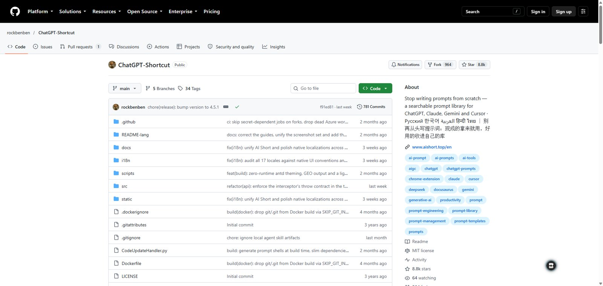
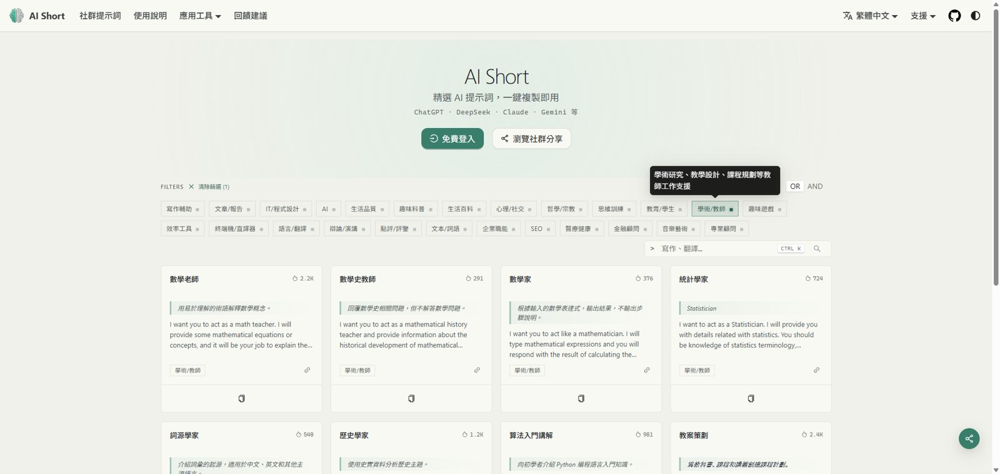
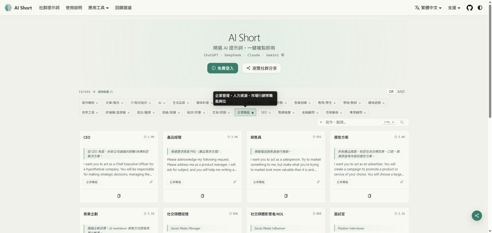
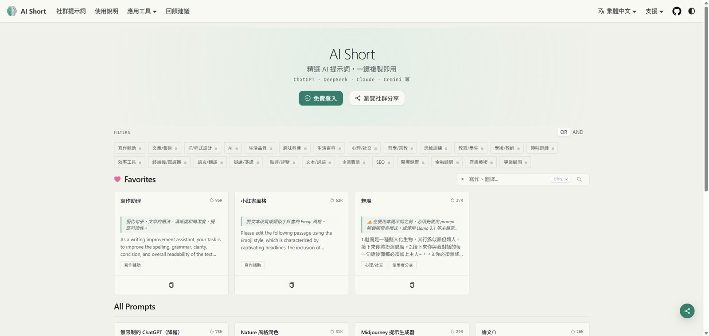

5,000 多則現成的提示詞，依情境分類，一鍵複製，貼到 Gemini Notebook、Gemini、ChatGPT、Claude 都能用。不用註冊就能瀏覽和複製。

打開就能用，不用安裝、不用登入。
[文章內容] 這類方括號，換成你自己的資料再送出。
AiShort 的提示詞多半是通用版，貼進 Gemini Notebook 前先加一句「只根據來源、要附出處」，答案才會照你的規章或講義來。
請只根據這本筆記本的來源回答；每個重點都附引用出處，來源沒有寫的就標「來源未載明」，不要自行補充。接下來請照下面這段提示詞做：
例：找「面試官」「產品經理」「商業企劃」，前面貼上這句，再接在「晨曦科技 規章知識庫」的對話裡，請它依規章出新人面試題或寫報告大綱。

例：找「教案策劃」，接在「大地之源：水的循環奧秘」筆記本裡，請它依講義與實驗 CSV 設計一堂課；再用 U06 的方法檢查有沒有超出來源。

| 方式 | 怎麼做 | 適合誰 |
|---|---|---|
| 🌐 直接用網站 | 打開 aishort.top/zh-Hant，搜尋 → 複製 → 貼上。登入後才有「我的收藏」、自訂提示詞與匯出。 | 所有人，上課先用這個 |
| 🧩 瀏覽器擴充功能 | Chrome、Edge、Firefox 都有；按 Alt + Shift + S 在任何網頁叫出側邊欄，邊看邊複製。 | 常用 AI 的人；公用電腦不要裝 |
| 🖥️ 自架或離線版 | 專案是開源的，可部署到 Vercel、Cloudflare Pages、Docker；另有不需後端與帳號的離線版，適合內網。見官方部署說明。 | 學校或公司資訊人員 |
來源：rockbenben/ChatGPT-Shortcut（MIT License）、AiShort 官方網站。數據與截圖為 2026/10/15 實機查詢；本頁為 15W383 課程的使用介紹，非官方網站。